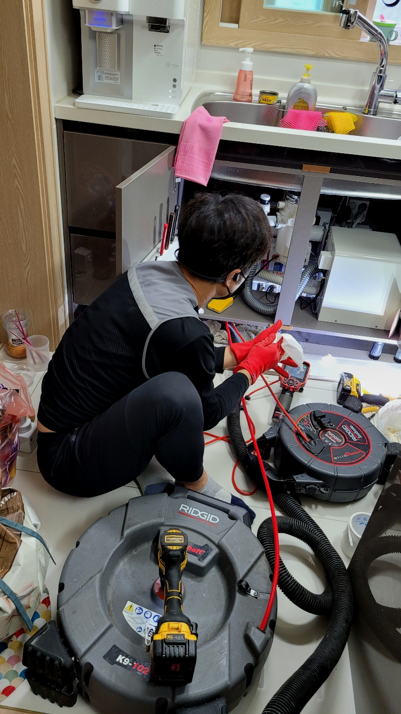
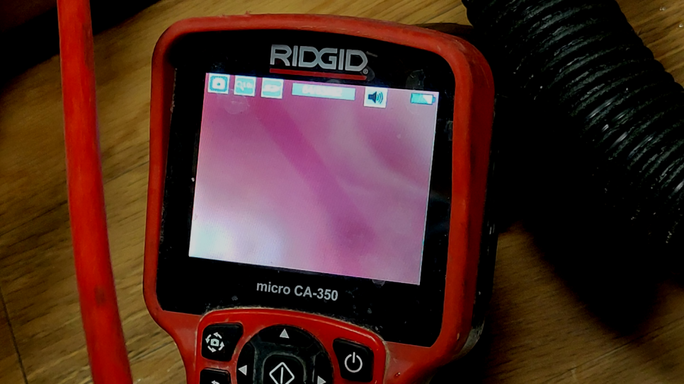
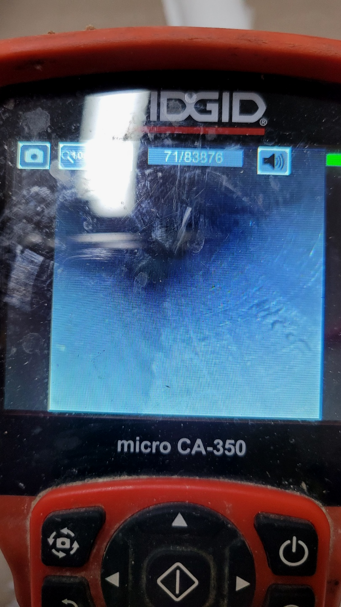
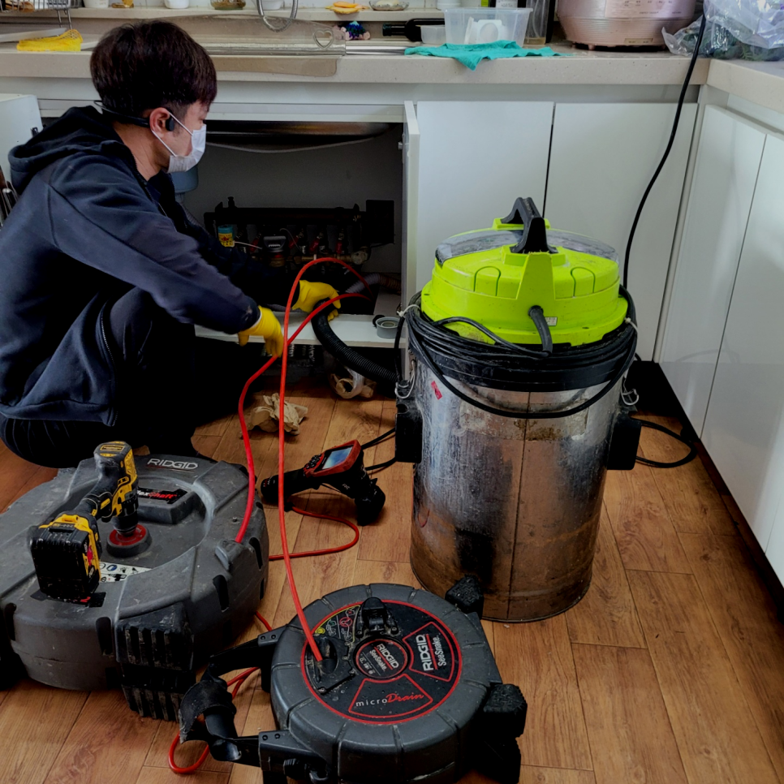
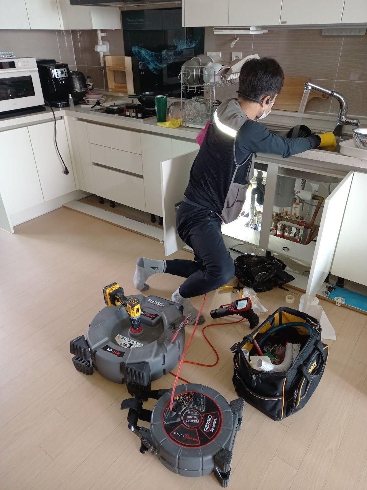
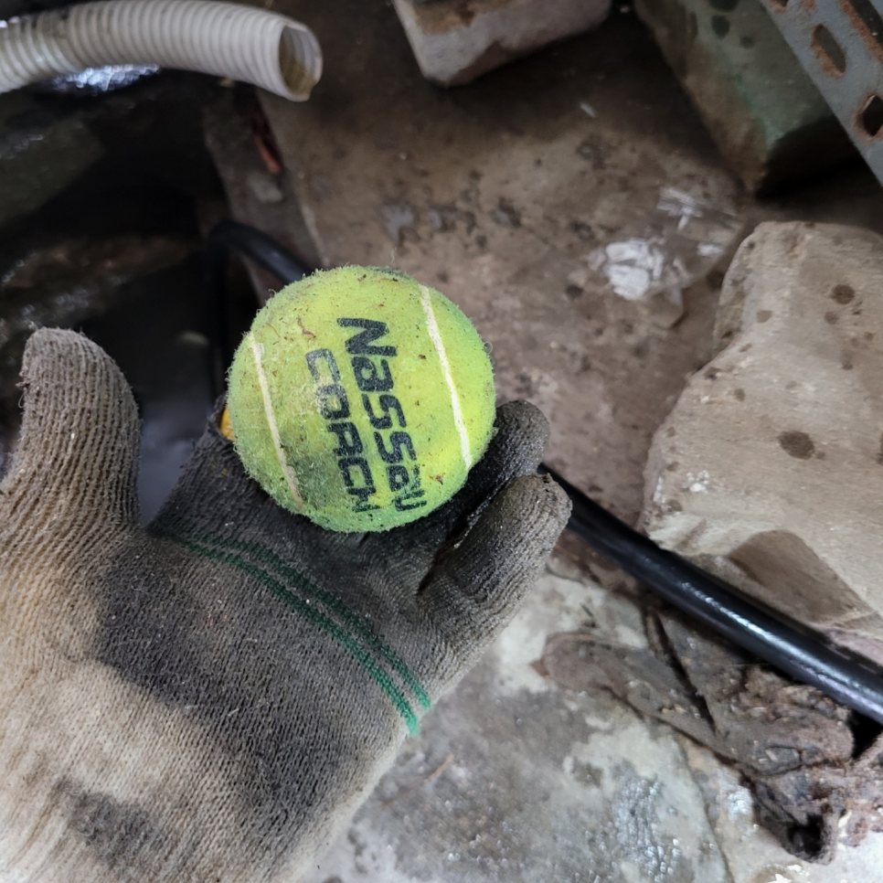

🏠 안성 씽크대막힘 하수구뚫음 배관역류 넘침 해결 설비회사
안성 싱크대막힘 전문 시공 후기

📋 작업 개요
- 위치: 안성
- 서비스 유형: 싱크대막힘, 변기막힘, 하수구막힘, 배관막힘, 역류해결, 뚫는업체, 배관청소, 고압세척
- 작업 일시: 2023. 10. 28. 14:37
- 업체명: 하수구수사대 (010-5615-2118)
🔍 문제 상황
어서오세요
설비전문업체 "하수구수사대"를 찾아주셔서 고맙습니다^^
주방이나 화장실과 같이 우리가 실내에서 편하게 물을 사용할 수 있는 것은 우리의 눈에는 보이지 않게 설치된 배출구와 배수관 덕분이랍니다.
전문업체에 연락하는건 다소부담스러워 혼자 가능한 해결해보고 싶어 퇴수를 뚫어보려고 시도하게 됩니다. 하지만 금방 해결되는 간단한 상황도 있지만 문제파악이 확실하게 안된다면 실패하거나 또 막히기 일쑤 입니다.
안성 씽크대막힘 하수구뚫음 배관역류 넘침 해결 설비회사

🔎 원인 분석
💡 전문가 진단: 안성 씽크대막힘 하수구뚫음 배관역류 넘침 해결 설비회사
배출구 청소의 작업에는 다양한 장비를 써야합니다. 일상에서는 쉽게 접할 수 없는 장비들이 대부분이고 배수구 속을 살펴볼 때 조차도 초심자들은 실수할 수밖에 없습니다. 크랙을 만드는등 더 큰 증상으로 번져버릴수도 있기에 생각하며 작업을 해야합니다.
흔히 구조가 다르기도 하고 꺼내야 하는 이물질들의 양이 일반적으로 많기 때문이라고 할 수 있습니다. 이렇게 평균 비용보다 훨씬 더 합리적인 비용을 제시하는 업체의 경우에는 정확하게 시공을 해주었는지 그리고 배출관막힘 재발의 확률은 없는지를 다시 한번 생각해 보고 결정을 하셔야 합니다.
평소에 땅에 묻혀있는 배관배관을 크게 신경을 쓰면서 살아가진 않지만 일상 속에서 막힘이 발생하지 않도록 가장 주의를 기울여야 하는 부분 중의 하나라고 할 수 있습니다. 갑자기 배관배관이 막히게 되면 불편함이 많이 생기게 될 수밖에 없는데요.
빠른 대처가 중요한 이유는 퇴수 속 이물질은 시간이 지남에 따라 더욱 심각해지기 때문입니다. 막힘 증상이 발견되었을 때 별일 아니겠지 생각하고 방치해버린다면 계속해서 축적되어 결국 배관을 좁게 만들고 물이 통하는 길을 막게 된답니다.
출중한 실력을 갖추고 있어 난이도 있는 현장이더라도 전부 성공한답니다. 다른 사람들은 퇴수뚫음 실패해버렸다 해도 해내버리고 있어요. 초심자 업체에 무턱대고 맡겨버렸다가 심각해지기만 하고 뚫리지도 않아 손실만 생겨버리곤 해요.
특히 현장처럼 배관이 드러나 있지 않고 건물 속이나 땅속에 묻혀있는배출구 배관에 문제가 생겨도 관로 탐지기라는 장비를 활용해서 찾고 상태를 볼수 있습니다. 건물이나 땅을 부수지 않다도 되기 때문에 편리하게 작업을 할수 있습니다.

🔧 작업 과정
하수도마다 거름망이 있지만 작은 사이즈의 이물질들은 통과될 가능성이 있습니다.처음에는 아주 소량의 이물질만이 통과하여 배수관에 자리를 잡기 시작하였겠지만 오랫동안 시간이 흐르면서 많은 양의 음식물 찌꺼기와 기름때 슬러지 덩어리가 함꼐 뭉쳐가면서 배관을 막게됩니다.
뚫어도 금방 막히는 배수관같은 경우에는 한 번쯤 고압세척 작업과 함께 내시경 촬영 작업을 통해서 확인을 해 보시는 것을 추천드립니다. 뚫는 작업이 한번에 작업으로 모두 제거가 되면 좋지만 이물질들이 너무 오래되어서 딱딱하게 굳어서 한 번에 제거를 하기가 쉽지 않았습니다.
심화돼버리면 퇴수구막힘은 기본이고 역으로 올라오는것이 걱정되실텐데요 이정도로만 그치진않죠. 혹여라도 악화돼버린다면 물들이 집안으로 흘러들기도합니다.또다른문제는 어떤물도 사용할수가없는것이겠죠
이것만으로 끝나는게아닌 방치했을때는 다른세대에 안좋은영향을 주기때문에 유의하셔야하는데요. 배수구막힘 의뢰자분만 고치신다면 상관없겠지만 이와같은것이 생기게되면 타격주신것을 변상해야되기에 큰피해를입으실텐데요.
배출관전문업체를 찾아서 간단하게 수리할수있었던 문제들도 이때문에 심화되기만해요.이러하기에 금액절약을위해 무리하면서 시도해보시는것은 일단 멈춰주시는게좋아요.
수도꼭지를바꿀때는 크랙이발생된 퇴수들을 설치를다시해야되면 큰작업까지도 진행하고있어요.다방면으로 지식이넓기에 세밀하게진행하고있고 의뢰인분의 요청사항에따라 그에대한해결책을 제공하고있습니다.
카페배출구나 주택하수구 배출구 속 기름 제거는 한순간에 쌓이는 것이 아니라 물을 버리는 과정에서 흘러들어가는 찌꺼기들이 점차 쌓이며 역류나 배출구막힘이 일어나기 때문에 물이 넘치는 원인에 대해 배출구 업체에 맡겨 꼼꼼히 검사하고 해결하면 예민하게 신경 쓰시지 않으셔도 됩니다.
그동안 인천 서구 화장실 배수 막힘 현장에 석회가 형성되는 과정에서 생활하며 배출된 머리카락 또한 엄청난 양으로 굳어있었던 모양입니다.
그리고 혹시라고 배출구배관 막힘이 발생하였을 때에는 망설이지 말고 빠르게 전문설비업체에 문의해서 해결하시기 바랍니다. 한번 배출구막힘이 발생했을 때 확실하게 해결해야 재발이 발생하지 않습니다.


✅ 작업 완료
그래서 하수도가 막혔다고 모두가 같은 상황이 아니지요. 막힌 상황에 알맞게 수리가 들어가야 하고 그러기 위해서는 하수도설비업체의 도움이 필요합니다.
악취와 벌레가 꼬이지 않는 배관을 지금 만나보시길 바라요. 낮이고 밤이고 언제든 문의는 환영이며 궁금증을 해결하시고 퇴수 막힘까지 속 시원하게 뚫어보시길 바랍니다!
#하수구막힘 #하수구뚫음 #하수구역류 #씽크대막힘 #싱크대역류 #오수관막힘 #하수구청소 #욕실하수구막힘 #변기막힘 #하수구뚫는비용 #싱크대수리 #화장실막힘




⚠️ 주방 싱크대 배관 막힘 예방 수칙
- ✅ 기름기가 묻은 식기나 프라이팬은 설거지 전 키친타올로 반드시 기름때를 닦아내세요.
- ✅ 주기적으로 싱크대 개수대에 뜨거운 물을 가득 받아 한 번에 내려 배관 내부 기름을 씻어내세요.
- ✅ 배수구 거름망을 미세한 필터로 사용하시고 음식물 찌꺼기가 틈으로 새어 들지 않게 관리하세요.
- ✅ 베이킹소다와 식초를 뜨거운 물과 함께 일주일에 한 번씩 부어주면 배관 살균과 막힘 예방에 좋습니다.
💡 핵심 정리
- 확실한 장비 작업(내시경 점검 및 샤프트 스케일링)으로 원인을 뿌리 뽑습니다.
- 작업 후 1년 이내에 동일한 부위 재발 시 100% 무상 A/S 서비스를 보장합니다.
- 서울 · 경기 · 인천 전 지역에 24시간 언제든 긴급 출동할 수 있도록 항시 대기 중입니다.
❓ 자주 묻는 질문 (FAQ)
🚨 안성 싱크대막힘 문제로 고민이신가요?
정확한 원인 진단과 확실한 시공으로 재발 없는 해결을 약속드립니다.
24시간 긴급 출동 | 서울 · 경기 · 인천 전지역 | 1년 내 재발 시 무상 A/S